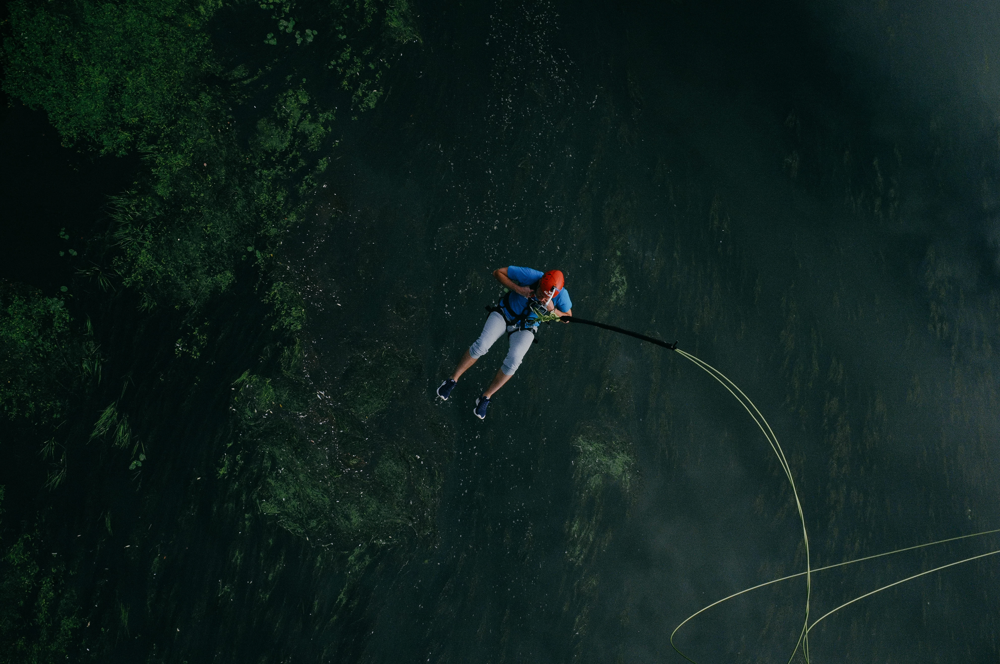
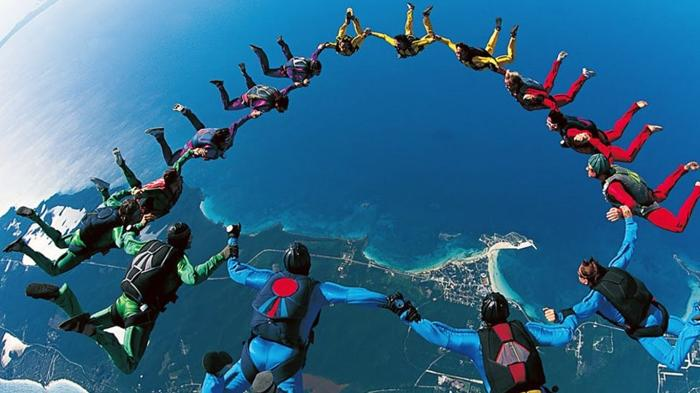

Selamat Datang di XtremeZone!
Selamat datang di XtremeZone, tempat di mana semangat olahraga ekstrem dan petualangan bertemu! Di sini, Anda akan menemukan semua informasi terbaru dan terlengkap tentang berbagai jenis olahraga ekstrem yang mendebarkan.

Jelajahi berbagai artikel menarik yang membahas pengalaman luar biasa, event-event seru yang akan datang, serta gear terbaru yang akan meningkatkan pengalaman olahraga ekstrem Anda. Dari skydiving yang menegangkan hingga surfing di ombak besar, kami memiliki semua yang Anda butuhkan untuk memulai petualangan Anda.
Apakah Anda seorang pemula yang ingin mencoba olahraga ekstrem untuk pertama kalinya, atau seorang profesional yang mencari tips dan trik untuk meningkatkan keterampilan Anda, XtremeZone adalah sumber daya yang tepat untuk Anda. Bergabunglah dengan komunitas kami dan temukan inspirasi dari para penggemar olahraga ekstrem lainnya.
Jangan lewatkan kesempatan untuk mengikuti event-event menarik yang kami adakan, di mana Anda dapat bertemu dengan sesama penggemar dan merasakan adrenalin bersama. Kami juga menyediakan ulasan dan rekomendasi gear terbaik yang akan membantu Anda tetap aman dan nyaman saat beraksi.
Selamat datang di dunia XtremeZone, di mana setiap hari adalah kesempatan baru untuk menjelajahi batasan Anda dan merasakan kebebasan sejati. Mari kita mulai petualangan ini bersama-sama!

Pengalaman Pertama Skydiving dari Ketinggian 15.000 Kaki
Detak jantung saya semakin kencang ketika pesawat yang saya tumpangi mulai mendaki ke ketinggian 15.000 kaki. Suara mesin pesawat yang bising dan getaran di dalam kabin membuat adrenalin saya meningkat. Saat pintu pesawat dibuka, angin dingin menyapu wajah saya, dan saya bisa merasakan ketegangan yang luar biasa. Dengan pandangan yang menakjubkan dari ketinggian, saya tahu bahwa saya akan segera melompat ke dalam pengalaman yang tak terlupakan.
Setelah instruktur memberikan arahan terakhir dan memastikan semua peralatan terpasang dengan benar, saatnya untuk melangkah ke tepi pesawat. Dengan satu langkah besar, saya melompat ke luar dan merasakan sensasi bebas yang luar biasa. Selama beberapa detik, saya terbang bebas di udara, merasakan kebebasan yang tidak tertandingi, sebelum parasut saya terbuka dan membawa saya kembali ke tanah dengan lembut.
Persiapan Penting Sebelum Melompat:
Sebelum terjun, ada beberapa persiapan penting yang harus dilakukan untuk memastikan keselamatan dan kenyamanan selama pengalaman skydiving. Berikut adalah beberapa perlengkapan yang perlu Anda siapkan:
- Parasut utama dan cadangan: Pastikan Anda memiliki parasut yang berfungsi dengan baik dan cadangan yang siap digunakan jika terjadi keadaan darurat.
- Altimeter digital: Alat ini sangat penting untuk memantau ketinggian Anda selama terjun dan membantu menentukan kapan waktu yang tepat untuk membuka parasut.
- Pelindung mata khusus: Menggunakan pelindung mata akan melindungi mata Anda dari angin kencang dan debu saat terjun.
- Pakaian anti-angin: Kenakan pakaian yang dirancang untuk mengurangi efek angin saat terjun, sehingga Anda dapat tetap nyaman selama pengalaman.
Dengan persiapan yang tepat dan peralatan yang memadai, pengalaman skydiving Anda akan menjadi salah satu momen paling mendebarkan dalam hidup Anda. Jangan ragu untuk mencoba dan rasakan sensasi terbang yang sesungguhnya!
Event Olahraga Ekstrem Mendatang
Siapkan diri Anda untuk mengikuti serangkaian event olahraga ekstrem yang mendebarkan di seluruh dunia! Dari kompetisi surfing yang menantang hingga festival skydiving yang spektakuler, setiap event menawarkan pengalaman unik yang tidak boleh Anda lewatkan.
Berikut adalah beberapa event menarik yang akan datang:
- 🏄♂️ Surfing Competition - Bali, 20 Agustus 2025: Bergabunglah dengan para peselancar terbaik dari seluruh dunia di pantai-pantai indah Bali. Saksikan aksi menakjubkan saat mereka bersaing untuk meraih gelar juara dalam ombak yang menantang. Event ini juga akan dimeriahkan dengan berbagai aktivitas menarik, termasuk pertunjukan musik dan bazaar makanan lokal.
- 🚴♀️ Mountain Bike Race - Bandung, 15 September 2025: Siapkan sepeda gunung Anda dan ikuti perlombaan yang menantang di jalur pegunungan Bandung. Nikmati pemandangan alam yang menakjubkan sambil bersaing dengan para pengendara lainnya. Event ini terbuka untuk semua level, dari pemula hingga profesional, dan akan ada hadiah menarik bagi para pemenang.
- 🏔️ Skydiving Festival - Jakarta, 10 Oktober 2025: Rasakan sensasi terjun bebas di festival skydiving terbesar di Jakarta! Bergabunglah dengan para skydiver dari berbagai belahan dunia dan nikmati pengalaman terbang yang tak terlupakan. Festival ini juga akan menyajikan berbagai workshop dan seminar tentang teknik skydiving, serta kesempatan untuk bertemu dengan instruktur berpengalaman.
Jangan lewatkan kesempatan untuk menjadi bagian dari event-event luar biasa ini! Setiap event tidak hanya menawarkan kompetisi yang seru, tetapi juga kesempatan untuk bertemu dengan sesama penggemar olahraga ekstrem, berbagi pengalaman, dan menjalin persahabatan baru. Pastikan untuk mendaftar dan siapkan diri Anda untuk petualangan yang tak terlupakan!
Gear Terbaik untuk Olahraga Ekstrem
Selamat datang di panduan kami tentang gear terbaik untuk olahraga ekstrem! Memilih peralatan yang tepat adalah langkah penting untuk memastikan pengalaman Anda tidak hanya menyenangkan tetapi juga aman. Dalam artikel ini, kami akan memperkenalkan beberapa gear unggulan yang telah terbukti kualitasnya dan direkomendasikan oleh para profesional di bidangnya.
Berikut adalah beberapa gear yang wajib dimiliki oleh setiap penggemar olahraga ekstrem:
- Parasut Skydiving - **Javelin Odyssey**: Parasut ini dikenal sebagai salah satu yang terbaik di pasaran, dirancang untuk memberikan stabilitas dan kontrol yang optimal saat terjun. Dengan material yang ringan namun kuat, Javelin Odyssey memastikan Anda dapat menikmati pengalaman terjun bebas dengan aman. Dilengkapi dengan sistem cadangan yang mudah diakses, parasut ini adalah pilihan sempurna bagi pemula maupun skydiver berpengalaman.
- Sepeda Gunung - **Trek Marlin 7**: Trek Marlin 7 adalah sepeda gunung yang dirancang untuk menghadapi berbagai medan, dari jalur berbatu hingga tanjakan curam. Dengan suspensi depan yang canggih dan frame yang ringan, sepeda ini menawarkan kenyamanan dan performa yang luar biasa. Dapatkan pengalaman berkendara yang tak terlupakan dengan sepeda ini, yang juga dilengkapi dengan rem hidrolik untuk pengereman yang responsif dan aman. Pastikan untuk menyesuaikan ukuran sepeda dengan tinggi badan Anda untuk kenyamanan maksimal.
- Peralatan Surfing - **Channel Islands Fish**: Untuk para peselancar, papan surfing Channel Islands Fish adalah pilihan yang wajib dimiliki. Dikenal karena desain aerodinamis dan daya apung yang optimal, papan ini memungkinkan Anda untuk menaklukkan ombak dengan percaya diri. Terbuat dari material berkualitas tinggi, Channel Islands Fish juga tahan lama dan cocok untuk berbagai kondisi laut, menjadikannya pilihan ideal bagi peselancar dari semua tingkat keahlian. Pastikan untuk memilih ukuran papan yang sesuai dengan berat dan tingkat pengalaman Anda.
Memiliki gear yang tepat tidak hanya meningkatkan performa Anda, tetapi juga memberikan rasa aman saat beraksi. Pastikan untuk selalu memilih peralatan yang sesuai dengan kebutuhan dan tingkat keahlian Anda. Dengan gear yang tepat, Anda dapat menikmati setiap momen dari olahraga ekstrem yang Anda cintai dengan lebih maksimal.
Jangan ragu untuk menjelajahi lebih banyak pilihan gear di situs kami, di mana Anda akan menemukan ulasan mendalam, tips pemilihan, dan rekomendasi dari para ahli. Bersiaplah untuk memulai petualangan Anda dengan peralatan terbaik yang akan mendukung setiap langkah Anda! Ingat, keselamatan adalah prioritas utama, jadi pastikan untuk selalu menggunakan peralatan yang sesuai dan mengikuti panduan keselamatan saat berolahraga.
Terima kasih telah mengunjungi XtremeZone! Jika Anda memiliki pertanyaan atau membutuhkan informasi lebih lanjut, jangan ragu untuk menghubungi kami.
Email: Kirimkan pertanyaan Anda ke info@xtremezone.com. Kami akan berusaha merespons dalam waktu 24 jam.
Telepon: Hubungi kami di +62 812-3456-7890 pada hari kerja, dari pukul 09.00 hingga 17.00 WIB.
Media Sosial: Ikuti kami di Instagram, Youtube untuk pembaruan terbaru.
Kami senang mendengar dari Anda!